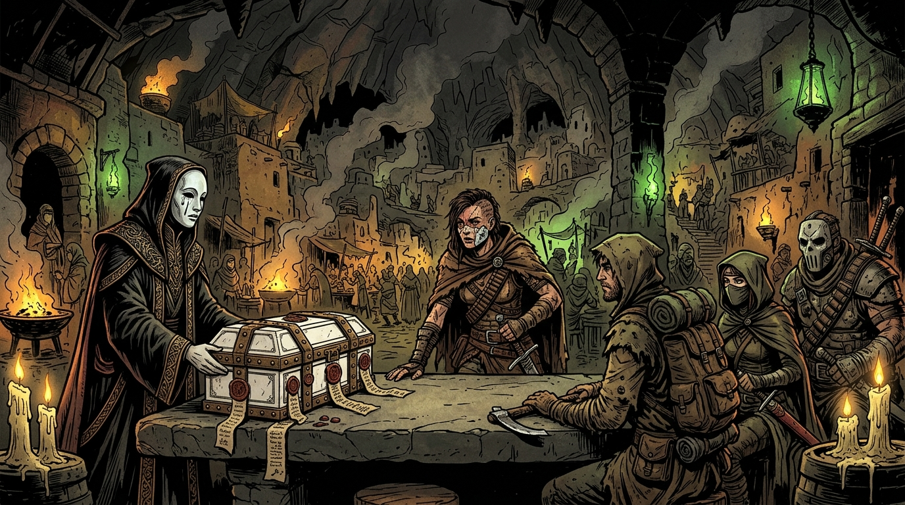
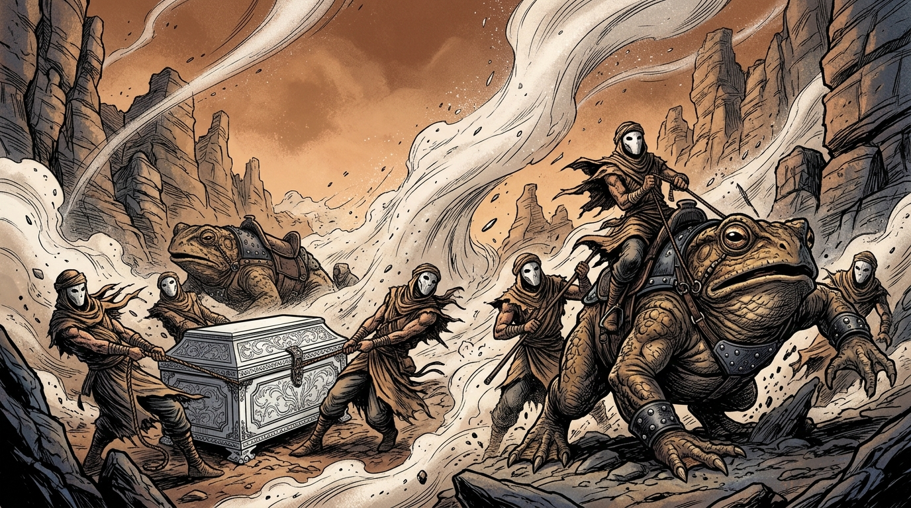
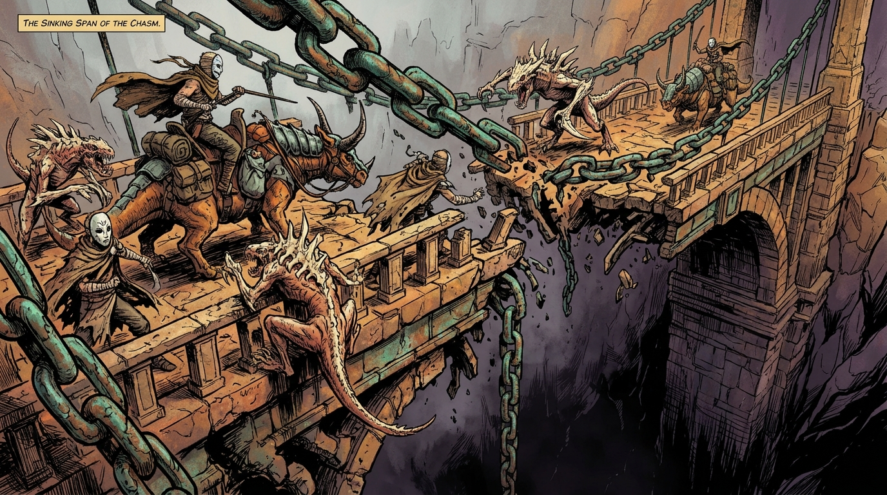
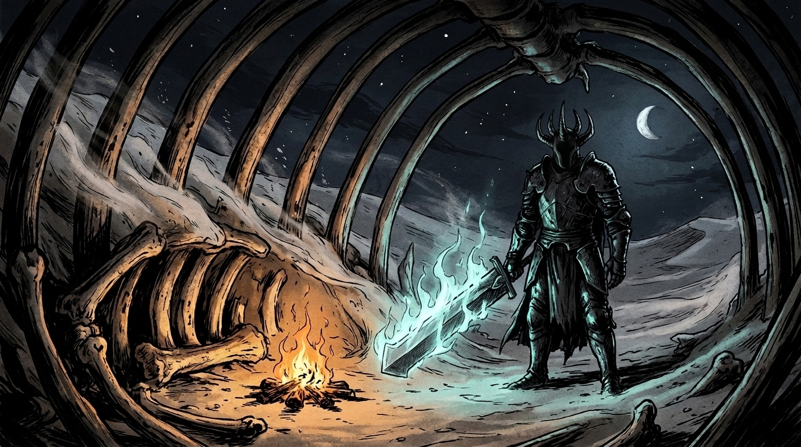
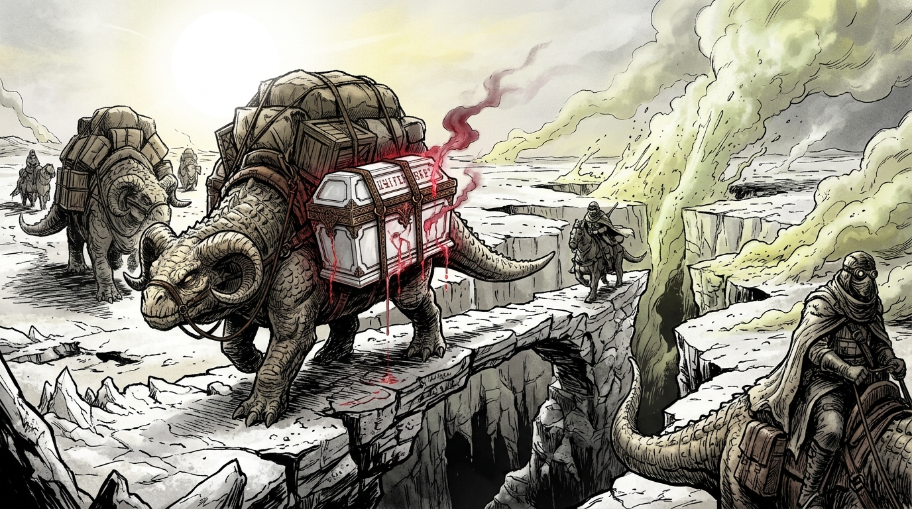
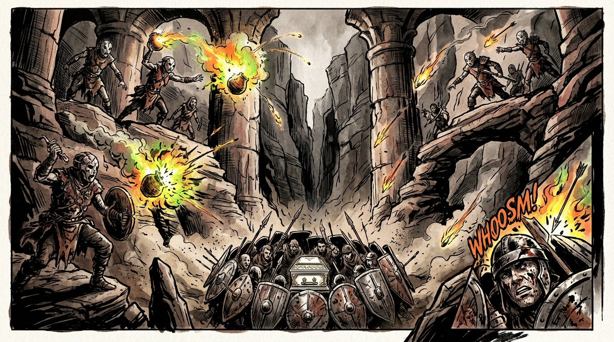
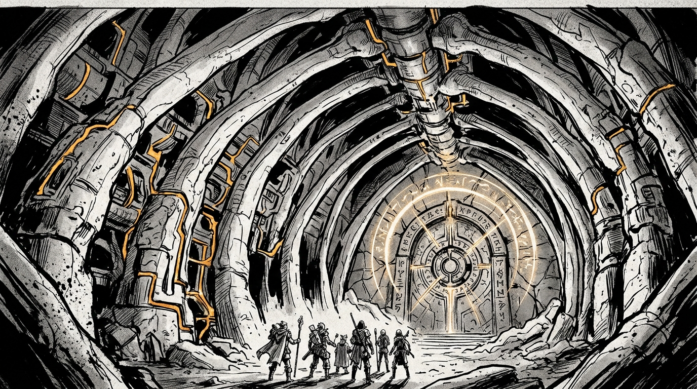
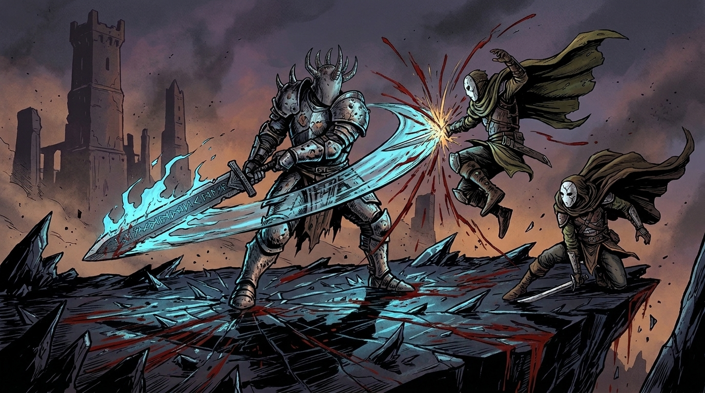
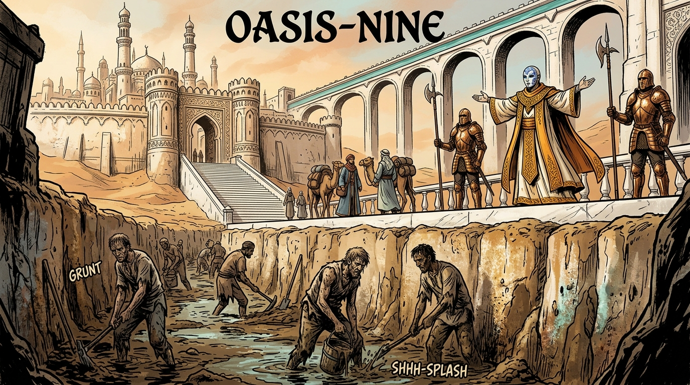
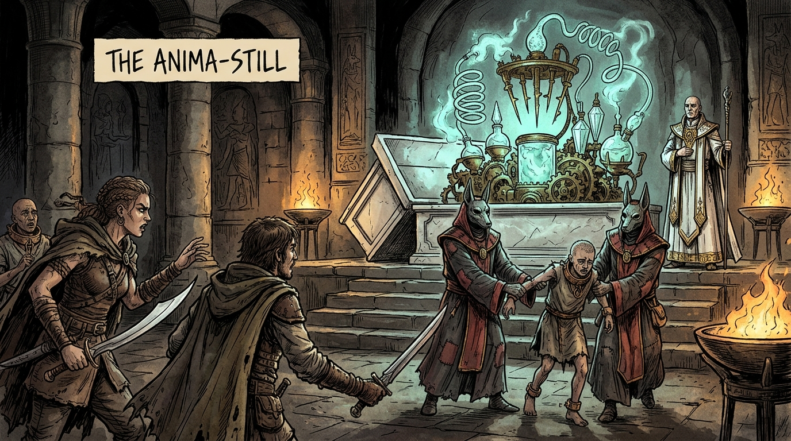

Page 1 of 6 • Campaign Briefing & Lore
The adventuring party is convened at the subterranean caldera town of Kiln-Hearth by the gilded emissaries of Oasis-Nine. Their contract: escort a hermetically sealed porcelain reliquary known as The White Casket across the deadly Great Alkali Trench.
According to High Prelate Orhan, the Casket preserves Lady Sula, the last uncontaminated maiden of pure blood. Untouched by the ash plague, her holy spirit is to perform the Rite of Rain in Oasis-Nine to awaken the eternal springs. The party is bound by an absolute occult taboo: The Casket must never be unsealed beneath the open sky, or the ambient ash-curse will dissolve her consecrated flesh within seconds.
1. The Maiden Myth: There is no girl inside the reliquary. The story of the fragile pureblood maiden is a cynical fraud invented to ensure honorable mercenaries will sacrifice their lives to protect it.
2. The Soul-Crucible: Inside rests The Anima-Still (Model IX). It is a predatory arcanotech apparatus: it does not pray for water—it consumes living human souls to transmute barren ash into drinking water for the Oasis-Nine oligarchy.
3. The Nemesis Was Right: Varek the Faceless is not a child-murderer. He is a former temple paladin whose daughter was sacrificed into the previous crucible. He hunts the party to shatter the machine before another generation of children is devoured.
High Prelate Orhan (Sovereign of Wells): Floor-length white silks embroidered with spun aurichalcum thread; wears a smiling porcelain mask inlaid with lapis lazuli. Soft-spoken, courtly, chillingly pragmatic. Treats industrial soul-harvesting as simple civic arithmetic.
“Nature abandoned this world to dust a millennium ago. We harvest the mud-dwellers so that nobility, intellect, and beauty may endure.”
Varek the Faceless (The Broken Paladin): Seven feet tall, armored in pitted soul-iron plate forged with weeping faces. Welded five-horned iron helm without eye-slits; perceives occult soul auras. Wields a colossal runic executioner greatsword trailing pale-blue corpse flame. Speaks like stones grinding in an iron churn.
“You carried a slaughterhouse upon your backs across the wastes, and you called it devotion. If your eyes are blind, my blade will open them.”
Envoy Caelen (The Silk Broker): Slender courier wearing a porcelain weeping-angel mask with gilded tears. Carries an ivory ledger and speaks with nervous, fluttering obsequiousness.
SESSION 1: THE WHITE CHASM (Exploration & Nature)
├── Sc. 1: The Contract at Kiln-Hearth (Vow & Reliquary)
├── Sc. 2: The Screaming Sirocco (Force of Nature: Glass Storm)
├── Sc. 3: The Sinking Span (Collapsing Bridge & Saurs)
└── Sc. 4: The Stalker in the Ash (First Brush with Varek)
SESSION 2: THE IRON BASIN (Hazards & Lore)
├── Sc. 5: The Alkali Sinks (Force of Nature: Boiling Lye)
├── Sc. 6: Ambush in Siphon Canyon (Kiln-Scrap Cult)
└── Sc. 7: Tomb of the Stone Colossus (Ancient Titan Vault)
SESSION 3: CITADEL & THE TWIST (Climax & Moral Choice)
├── Sc. 8: Blood upon Vitrified Ridge (Duel with Varek)
├── Sc. 9: The Ivory Spire of Oasis-Nine (Gates & Blood Gutters)
└── Sc. 10: The Anima-Still Awakens (The Reveal & Revolt)
Page 2 of 6 • Session 1: The White Chasm

Kiln-Hearth Subterranean Vault
The White Casket Presented
Kiln-Hearth chokes beneath an inverted volcanic caldera. In the private vault of the Black Amphora, Envoy Caelen's porcelain weeping-angel mask gleams in candle grease. Across the basalt trestle rests the six-foot White Casket, bound in warded bronze. A rhythmic pulse vibrates through the stone whenever touched. 'Four hundred leagues across the Alkali Trench,' Caelen whispers. 'Protect Lady Sula with your lives. Never unseal it beneath the sky.'
Foreshadowing Clue #1 (Runic Inscriptions):
Characters inspecting the bronze hoops (KNO 14+) realize the glyphs are not prayers of healing or bodily preservation. They are proto-sorcerous containment wards engineered to trap volatile spiritual essences.
Departure: The party is given 2 ceramic water-chits each and deeds to terrace estates. As the toad-saurs haul the sled into the white wastes, place a d4 Tension Die at table center.

The Great Alkali Trench
Catastrophic Glass Dust Gale
At noon on the fourth day, the sky turns the color of scorched copper. A metallic shriek rattles your teeth. From the north sweeps a five-hundred-foot wall of vitrified volcanic glass and white ash, chewing stone to powder. Your pack beasts bellow in terror as the sled begins to lift on the gale!
OBSTACLE: THE SCREAMING SIROCCO
Cataclysm
Threshold: Hard (17+)
HP: 26
Clocks: 3 Ticks
Approaches: COS (bracing sled ropes, shielding mounts with cloaks and body weight) or WIT (discerning vortex eddies to steer into an undercut basalt cavern).
Counterattack (if Alive / on Bust): Glass-Flayed Flesh. Razor grit inflicts 1d6 HP to actor and aiding allies (on a Bust, also step up Tension Die by 1 tier).
Escalation Clock: Failed rounds add 1 tick. At 3 ticks, a pack strap snaps: lose 1 water chit or gear item into the abyss.
Page 3 of 6 • Session 1: The White Chasm

The Broken Aqueduct Span
Bone-Crested Carrion-Saurs
An eighty-foot chasm is crossed only by petrified timber flagstones suspended on colossal oxidized bronze chains. As the sled crosses, ancient timbers crack like gunshots. Drawn by the psychic hum of the Casket, three Bone-Crested Carrion-Saurs crawl up the sheer cliff face with snapping jaws!
OBSTACLE: CRUMBLING SPAN & SAURS
Hybrid
Threshold: Mod (14+)
HP: 22
Approaches: STR / AGI (slashing saur tendons, leaping buckling spans) or KNO / PRE (re-tensioning bronze links via harmonic cantrips, roaring war-cries to terrify beasts).
Counterattack (if Alive / on Bust): Snapping Link & Lunge. A chain snaps; flying shrapnel deals 1d8 HP damage and knocks character prone at the abyss edge.
Aiding Rule: Perfect opportunity for players to sacrifice actions to lower threshold or grant rerolls!

Petrified Leviathan Cranium
Varek's Midnight Warning
Camp is pitched inside the hollow skull of a petrified desert leviathan. At midnight, ward-stones crack. Striding through the ash comes Varek the Faceless: seven feet of soot-blackened soul-iron plate with a five-horned blind helm. He drags a greatsword blazing with cold corpse-light. 'You bleed for a lie, wanderers. Open the porcelain grave. Look upon the god you carry before you die for its hunger.'
BOSS: VAREK THE FACELESS (SKIRMISH)
Nemesis
Threshold: Extreme (20+)
HP: 18
Approaches: STR / COS (parrying massive cleaves into bone pillars) or WIT / AGI (exploiting his sensory reliance on soul-auras to flank).
Counterattack (if Alive / on Bust): Corpse-Fire Shockwave. Rune-blade deals 1d10 damage (HP or MP) and blasts target into the campfire.
Withdrawal: At 0 HP, Varek hurls an alchemical smoke bomb: 'Turn back, or your bones will pave the temple.'
End of Session 1 Check: Roll the accumulated Tension Die on the Wasteland Threat Table and reset to d4!
Page 4 of 6 • Session 2: The Iron Basin

The Blinding Alkali Flats
Boiling Lye & Leaking Spirit-Blood
The salt flats stretch to infinity under a bleached sun. The ground feels sickeningly spongy. Sulfur fumaroles hiss, and beneath the thin crust boils a sea of caustic lye and quicksilver. The Casket shudders violently. From its bronze rim, a single drop of condensate oozes onto the salt. It is thick, iridescent, copper-smelling crimson fluid—spirit-blood—and where it falls, the lye smokes like brimstone.
Foreshadowing Clue #2 (Metabolic Digestion):
A healer or arcanist testing the fluid (WIT 14+) detects intense spiritual digestion. Whatever is inside is generating violent metaphysical waste-heat. A mortal maiden would be incinerated from the inside out.
OBSTACLE: THE BOILING ALKALI CRUST
Hazard
Threshold: Hard (17+)
HP: 24
Approaches: AGI (guiding beasts across narrow ridges) or WIT (reading subterranean shimmer to avoid quicksand pockets).
Counterattack (if Alive / on Bust): Lye Geyser. Acidic sludge erupts: deals 1d8 HP damage and destroys 1 mundane item or waterskin.

Petrified Aqueduct Columns
The Kiln-Scrap Cult Ambush
Siphon Canyon narrows into a red gorge lined with ancient aqueduct columns. High on maintenance ledges, scavengers wearing cracked ceramic masks mended with lead appear. 'The White Vessel!' their leader screeches. 'The Water-Eater is ours! Smelt the bronze! Drink its blood!' Clay jars shatter in blinding sheets of alchemical fire as boulders crash down!
OBSTACLE: KILN-SCRAP CANYON AMBUSH
Ambush
Threshold: Mod (14+)
HP: 28
Approaches: STR (clearing deadfalls, throwing javelins at ledges) or PRE (bellowing terrifying war-threats, breaking their fanatic zeal).
Counterattack (if Alive / on Bust): Alchemical Fire-Pot. Deals 1d6 HP and inflicts Burning condition (disadvantage on physical checks until smothered).
Interrogation Clue: Captives weep: 'It drinks people! In the old war, it drank three villages to fill the high fountains!'
Page 5 of 6 • The Titan's Tomb & The Ridge Duel

The Slumbering Titan's Ribcage
Aurichalcum Conduits & Vault Portal
You take refuge in the hollow ribcage of the Slumbering Titan—a 200-foot stone golem carved by the First Builders. Along granite pillars run conduits of liquid glowing aurichalcum. Deep in the sternum chamber, the way north is barred by a massive circular vault door covered in spinning runic rings beside an ancient offering altar.
Foreshadowing Clue #3 (Ancient Inscription):
Deciphering the pedestal hieroglyphs (KNO 14+) yields the terrible truth:
“VESSEL MODEL IX: REVERSE-ENTROPIC ALAMBIC. TRANSFORMS LIVING HUMORS AND ANIMA-FORCE INTO PURE HYDRAULIC ELEMENT. ONE SOUL PER THOUSAND AMPHORAE.”
OBSTACLE: THE TITAN’S WARDED PORTAL
Sorcery
Threshold: Hard (17+)
HP: 20
Approaches: KNO (harmonic ring sequence) or STR / COS (heaving calcified counterweights).
Counterattack (if Alive / on Bust): Arcane Backlash. Golden lightning arcs for 1d8 MP damage (and steps up the Tension Die on a Bust)!
End of Session 2 Check: Roll the Tension Die and reset to d4!

The Vitrified Obsidian Ridge
The Final Stand of Varek
You crest a ridge of black obsidian glass overlooking the white towers of Oasis-Nine. Waiting at the apex stands Varek the Faceless, greatsword driven into the glass. 'You carried a slaughterhouse across the desert and called it devotion. If your eyes will not open, my blade will open them. The machine dies today—or you die defending it.'
BOSS: VAREK THE FACELESS (UNLEASHED)
Nemesis Boss
Threshold: Hard (17+) / (14+ on pauldron runes)
HP: 35
MP: 20
Approaches: STR / AGI (slipping past cleaves to strike knee joints) or PRE / KNO (invoking temple oaths, naming his dead daughter, unbinding his cloak wards).
Counterattack (if Alive / on Bust): Soul-Cleaving Brand. White-hot corpse fire deals 2d8 damage (HP or MP) and permanently shatters 1 weapon/shield!
The Dying Revelation: Collapsing at 0 HP, Varek grips a player's arm: “Break the seals... look into the cradle before you give it to Orhan... Do not let them feed her name to the fire...”
Page 6 of 6 • The Citadel & The Moral Crucible

The Monumental Alabaster Gates
Prelate Orhan's Welcome & Blood Gutters
Oasis-Nine is a paradise of spiraling white towers and cold aqueducts. Outside the alabaster walls, thousands of emaciated, maskless kiln-slaves toil in mud trenches under overseer whips. High Prelate Orhan descends the grand marble steps in white spidersilk robes and a lapis-inlaid smiling porcelain mask: 'Blessed guardians, bring the Holy Maiden to the Inner Sanctum!'
The Suspicion (WIT 14+): Through the sanctum grates, characters spot no royal cushions. Instead, executioners carry bronze chains, vinegar sponges, and blood drainage basins surrounding a sunken drain-pit.

The Sacrificial Inner Sanctum
The Soul-Crucible Revealed
The porcelain lid is swung wide. There is no maiden inside. Resting upon the purple velvet cradle is a monstrous apparatus of spun gold, crystal alembics, and razor-tipped extraction needles: The Anima-Still. Priests drag forward two shivering teenage kiln-slaves in bronze collars. Prelate Orhan looks calmly at your drawn blades: 'Did you think heaven poured water upon this dead earth? Take your gold, put on your golden masks, and walk away.'
OPTION A: The Aristocratic Compromise (Cynical Survival)
The players take their bags of platinum, estate deeds, and turn their backs. The needles pierce the children's spines; the crucible flares cyan, and fountains gush with fresh water.
Epilogue: Orhan places Smiling Golden Masks over their faces. They are now immortal lords of the oasis—living in luxury bought with the screams of the dead.
OPTION B: Shattering the Soul-Crucible (The Rebel’s Blast)
The party attacks Prelate Orhan and the Temple Guard (Threshold: Extreme 19+ | HP: 32). Counterattack (if alive / on bust) deals 2d10 HP from lapis sunfire.
Epilogue: The machine shatters into crystal shards. Fountains dry up; slaves rise in revolt. The party flees into the dunes as outlaws, bearing Varek's five-horned iron helm as a sacred relic.
| Sc. |
Scene & Hazard |
Attributes |
Threshold |
Counterattack (if Alive) / Bust |
| 1 | Contract at Kiln-Hearth | KNO / PRE | 14+ | Misses necro-runes; Tension starts at d4 |
| 2 | The Screaming Sirocco | COS / WIT | 17+ | 1d6 HP glass-flayed damage; Tension steps up |
| 3 | The Sinking Span & Saurs | STR / AGI | 14+ | 1d8 HP & knocked prone on edge of chasm |
| 4 | The Stalker in the Ash | STR / PRE | 20+ | 1d10 damage shockwave; Varek tests resolve |
| 5 | The Boiling Alkali Sinks | AGI / WIT | 17+ | 1d8 HP lye burn & gear destroyed; spirit-blood leaks |
| 6 | Ambush in Siphon Canyon | STR / PRE | 14+ | 1d6 HP alchemical fire & Burning condition |
| 7 | Tomb of Stone Colossus | KNO / STR | 17+ | 1d8 MP arcane backlash; reads dark lore |
| 8 | Duel on Vitrified Ridge | STR / KNO | 17+ | 2d8 damage & shatters 1 weapon; dying plea |
| 9 | The Ivory Spire Gates | PRE / WIT | 14+ | Spots sacrificial drains and executioner tools |
| 10 | The Anima-Still Awakens | Any (Combat) | 19+ | 2d10 HP sunfire; Fate of Oasis-Nine decided |